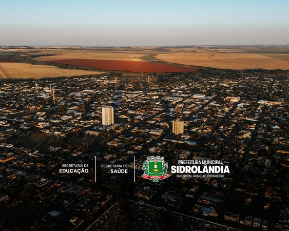

Uma cidade mais limpa começa com informação.
O EcoSid reúne em um único lugar informações sobre a coleta seletiva, ecopontos, educação ambiental e calendário de coleta da cidade de Sidrolândia.

Objetivos do EcoSid
Facilitar o acesso às informações sobre a coleta seletiva, incentivar a reciclagem e promover a educação ambiental em Sidrolândia.
Localizar Ecopontos
Disponibilizar os locais de descarte de materiais recicláveis para facilitar o acesso da população.
Informar a Coleta
Permitir que os cidadãos consultem os dias e horários da coleta seletiva em seus bairros.
Educação Ambiental
Incentivar hábitos sustentáveis e orientar a população sobre o descarte correto dos resíduos recicláveis.
Mapa dos Ecopontos
Visualize rapidamente onde estão localizados os principais ecopontos da cidade de Sidrolândia.
Acesse os Serviços
Consulte as principais funcionalidades disponíveis no EcoSid.
Ecopontos
Consulte os locais disponíveis para descarte de materiais recicláveis.
Calendário
Consulte os dias e horários da coleta seletiva em cada bairro.
Educação Ambiental
Aprenda como separar corretamente os resíduos recicláveis e contribuir com o meio ambiente.
Como funciona o EcoSid?
O EcoSid foi desenvolvido para facilitar o acesso às informações sobre a coleta seletiva em Sidrolândia.
Localize um Ecoponto
Consulte os ecopontos disponíveis e escolha o mais próximo de você.
Consulte o Calendário
Verifique os dias e horários da coleta seletiva em seu bairro.
Separe os Materiais
Faça a separação correta dos resíduos recicláveis antes do descarte.
Contribua com o Meio Ambiente
Pequenas atitudes fazem a diferença para uma cidade mais limpa e sustentável.